Five directions for the whole journey
Each direction redesigns the ruled onboarding (every login inside it, a benefit line before each one, proof after it), the "Here's your week" reveal and the daily "what's next" page. Every one starts from Notion and Stripe and adds one third reference that no other direction uses. All data is invented: Maya Okafor at Halverson State University. Screenshots and scores below are from round 2; round 1's score is shown beside each.
Recommendation: keep 5b, Departures, as the spine. Round 2 fixed its daily page: it is now the same week board in its own face, "Lab 6 is next." over one departures board in Knowlu's order. The next work is the reveal, which still drops the board for a calendar grid on the screen meant to pay it off, and then the wait, which is still the round-1 version.
Fallback if a student test shows the board distracts during setup: 2, One thing per screen. 2, 4 and 5b now tie at 66 and all five sit within 5 points, so the scores don't decide this. 4 moved the most (its board is now ranked, not a padlock grid), but it ends in a generic calendar and a console. The reasoning is in the recommendation and in README.md.
A conversation that hands you the list
Superhuman ran onboarding as a live session on the user's own inbox. Knowlu runs the same session with no human in it. Each step is one exchange: one line from Knowlu, then the action, then the proof in numbers. Gestures are taught on real items as they appear (Undo on the dues email found before setup). The reveal is Knowlu's first morning brief, and the daily page puts the list on the left with Knowlu's note in the margin.
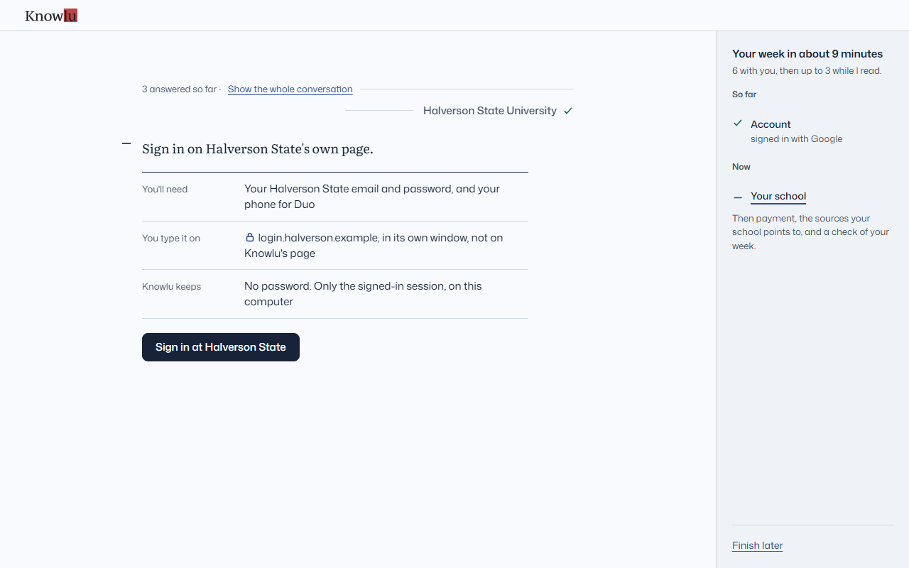
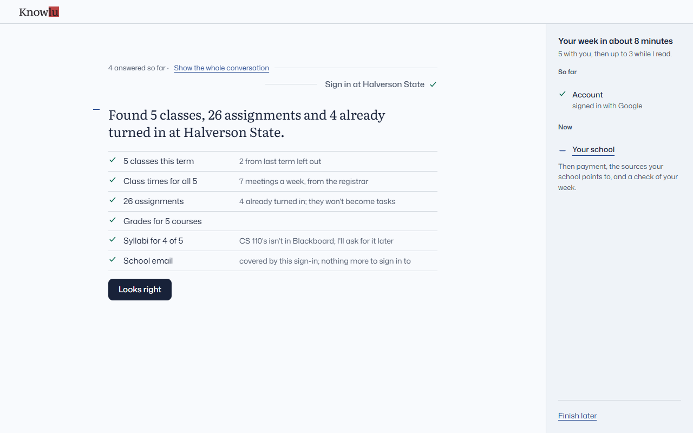
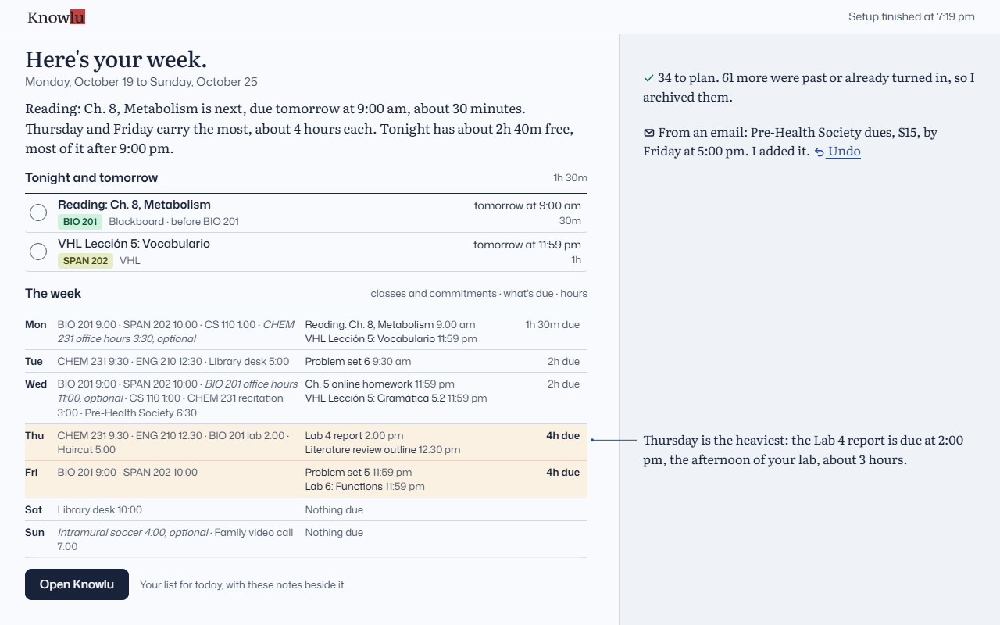
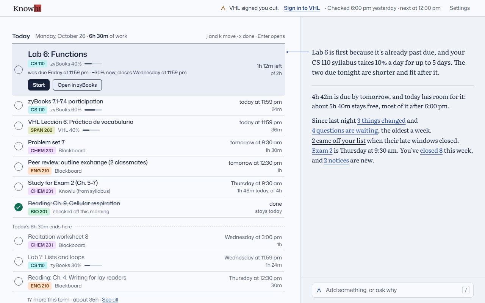
What it borrows
- NotionNotion Mail's proof drawn from your own inbox; Ivan Zhao's "make the dumbest path great" (open, read one sentence, press Start); no tours, no fake to-dos.
- StripeLink's recognise-then-verify (one school sign-in, "you won't sign in to these again"); docs written with the reader's own data; Checkout's order summary built from the school proof.
- SuperhumanOnboarding as a session on real data; teach only the gestures that matter, by doing them for real; full-screen setup before the product; turn a stumble into a calm reply.
Honest weaknesses after round 2
- Onboarding is still mostly empty canvas. On A, S-need and K1 the content ends around y 350-510 of 800, in a column left of centre. It reads as a form floating in a void.
- Progress is shown three ways at once (the "answered so far" line, an echo of the last answer, the rail). On G the echo reads "Continue ✓". The rail's "6 with you, then up to 3 while I read" is cryptic.
- The daily margin is link soup: six underlined phrases in five lines, with the four waiting questions (the only ones needing action) at the same weight as "closed 8".
- Three hour figures on one page: "6h 30m of work", "4h 42m is due by tomorrow" with "5h 40m stays free", and "Today's 6h 30m ends here".
- The reveal's "61 more were past or already turned in, so I archived them" has no way to look, and the week table wraps to three lines a day.
Worth keeping: S-proof is now the strongest proof screen in the set: one sentence over ruled rows, each saying what was left out and why, with one "Looks right".
Setup, one screen at a time fallback
The student never sees more than one thing to do. Each full-window sheet gives the why line, one button, then the proof. Progress is counted in the student's own terms on a route bar at the bottom. Optional steps get Setup's "Set up later" with the cost named. The week is kept hidden until the reveal so that it lands as one event, after a transfer-style "Building your week" screen that counts real work and stops at 3 minutes.
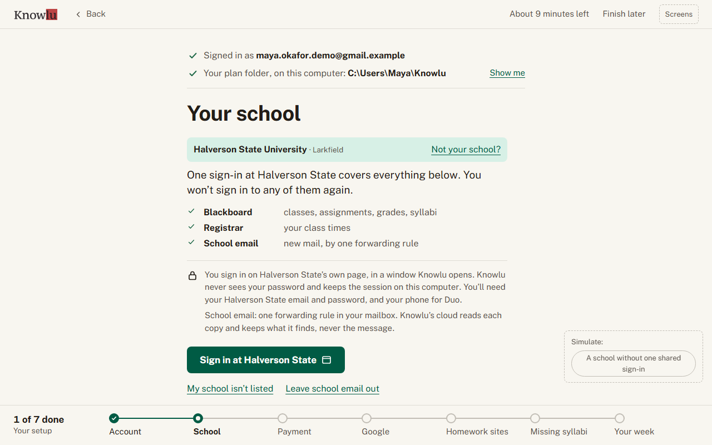
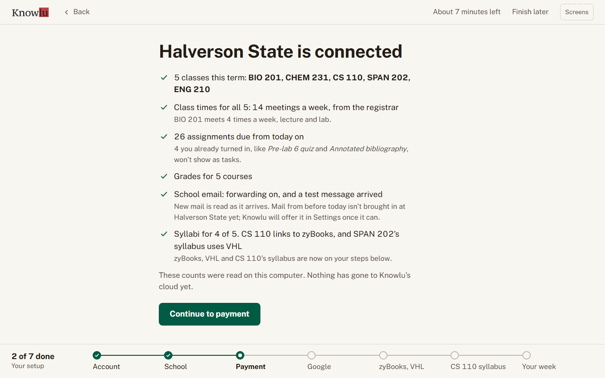
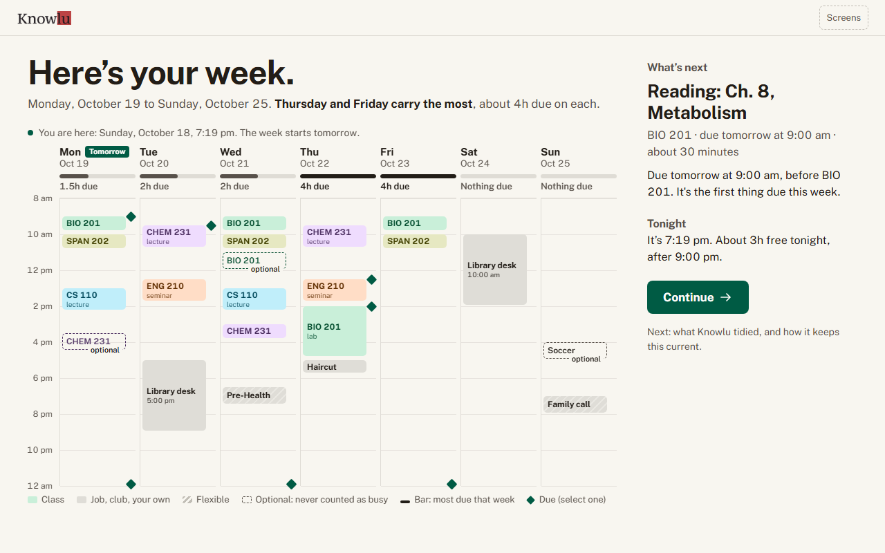
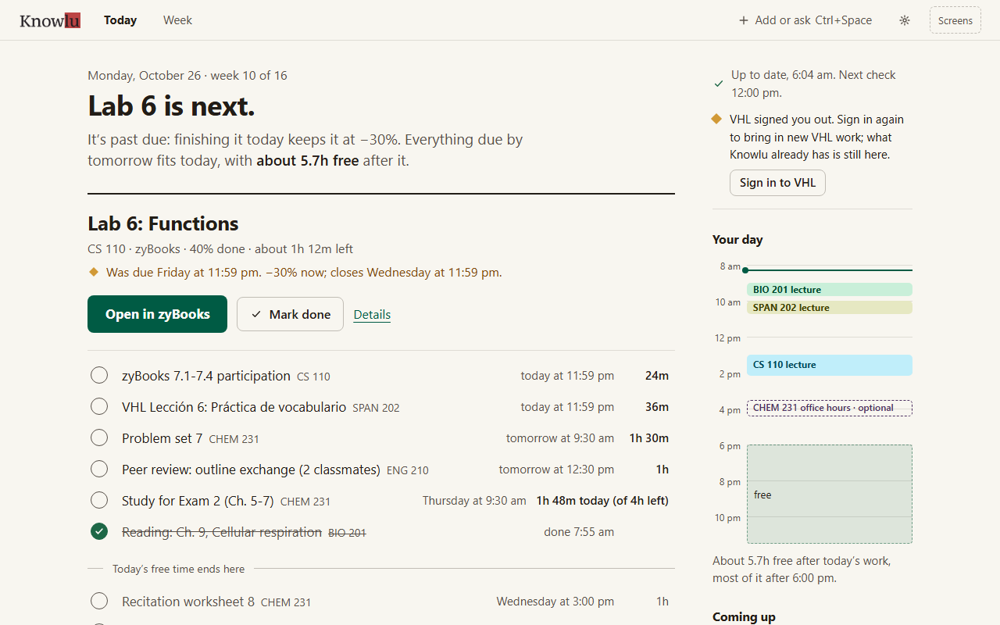
What it borrows
- NotionHome's order (now, then soon, then my work); sections that appear only when they have content; adjacency spacing in place of boxes.
- Stripe"Save for later" and resume that re-checks what is outstanding; pending states with a time expectation; Checkout's order summary; prefill then confirm.
- Apple SetupOne decision per screen; a pre-permission screen whose one button names what it opens; "Set Up Later"; the Quick Start transfer screen with honest timing; the week as a single "Hello" moment.
Honest weaknesses after round 2
- The reveal is slow to settle. At 4 seconds it is still mid-animation: the grid dimmed, cut at 4 pm, the weekend missing. The most important screen shows a half-built week.
- The VHL warning sits in the side column, away from the "VHL Lección 6, today at 11:59 pm" row it affects, which carries no flag.
- The headline and the task card repeat each other ("Lab 6 is next." over "Lab 6: Functions"), so the task starts at y 285. The list's columns are ragged ("1h 48m today (of 4h left)").
- Due items are still bare diamonds on the reveal and the Week page, with 11:59 pm on the midnight line.
- The zyBooks step shows a password already filled in before the student types, which reads as stored credentials. R0 shows "11 of 12 done" above a rail saying "7 of 7 done".
Worth keeping: the school sheet and S3 proof are the clearest in the set, and R0's "Building your week" countable list is the model for any wait. Today now reads in about two scrolls with no morning gate.
The week as a balance
Under "what's next" sits "do I have enough time?", so the direction answers it from the first proof on. A ledger opens at the school step and fills as each source is read, showing its two inputs (work due, time taken) and weighing them only at the end. The reveal is the week's statement: work due against open time, day by day, read at the tightest day. The daily page is today's budget with its line items.
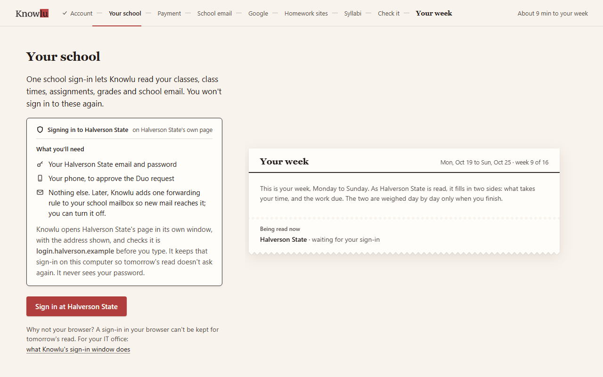
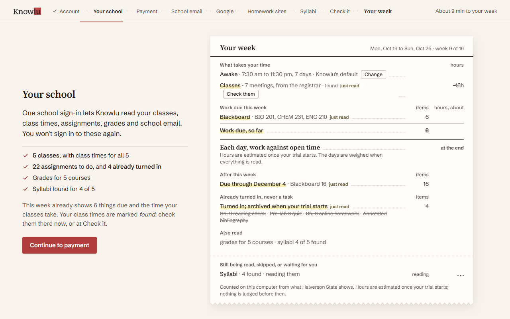
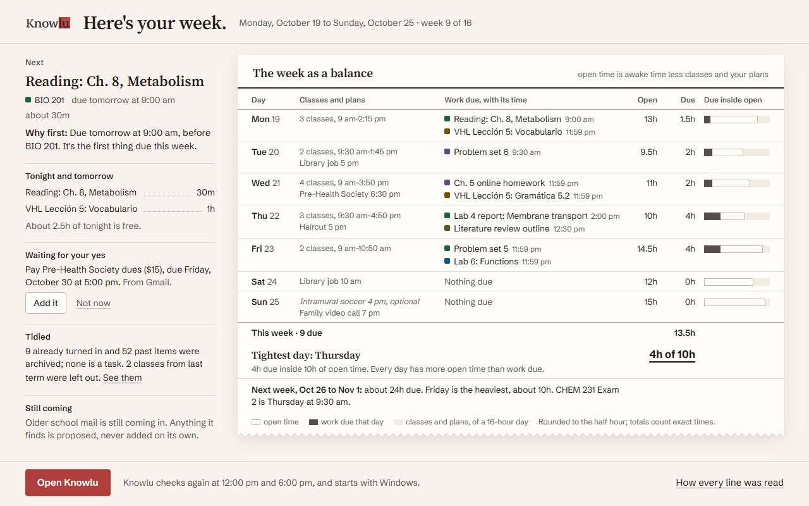
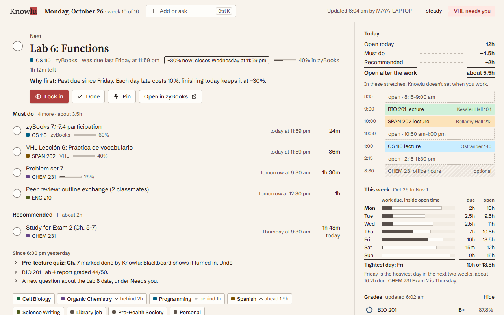
What it borrows
- NotionThe preview that builds beside the signup form, made real as the ledger pane; one object, many renders; adjacency spacing.
- StripeBalances shown precisely with available and pending kept apart; at most one comparison per figure; Checkout's order summary.
- ShovelHours needed against hours available; the cushion taken at its tightest deadline. It stops short of typed estimates, start dates and "delete something" advice.
Honest weaknesses after round 2
- Every screen's main heading is boxed in red by focus styling ("Your school", "Here's your week.", "Lab 6: Functions"). To a tired student it reads as an error.
- The daily page breaks the ledger's own promise: the Today rail says Must do −4.5h for Monday while This week says Mon 2h due, 200 px apart, unexplained.
- The dropped leftover-hours idea survives at day scale ("Open after the work: about 5.5h", "About 2.5h of tonight is free"), and "Classes −16h" still subtracts from nothing.
- The stepper's "Your week" label overlaps "About 3 min to your week" on
o10-your-week, which also has two controls for the same awake window. - The daily page has about nine regions competing above or near the fold, and "steady" in the header is cryptic.
Worth keeping: "Tightest day · 10h of 13.5h" with "Every day has more open time than work due". It answers "am I okay?" honestly, and 5b has already taken it.
Connections hub, one sheet per source
What Knowlu reads becomes the visible structure. A ranked board shows one large "Suggested next" tile, the other open places as rows, then what is connected and what each found. Sources the school sign-in discovered (zyBooks, VHL, the missing syllabus) say "Found at your school" and why. Each opens a Plaid-style sheet: what you'll need, the school's own window, then a success state that writes the proof onto the board. After setup the board becomes Connections, and the daily page is a ranked list.
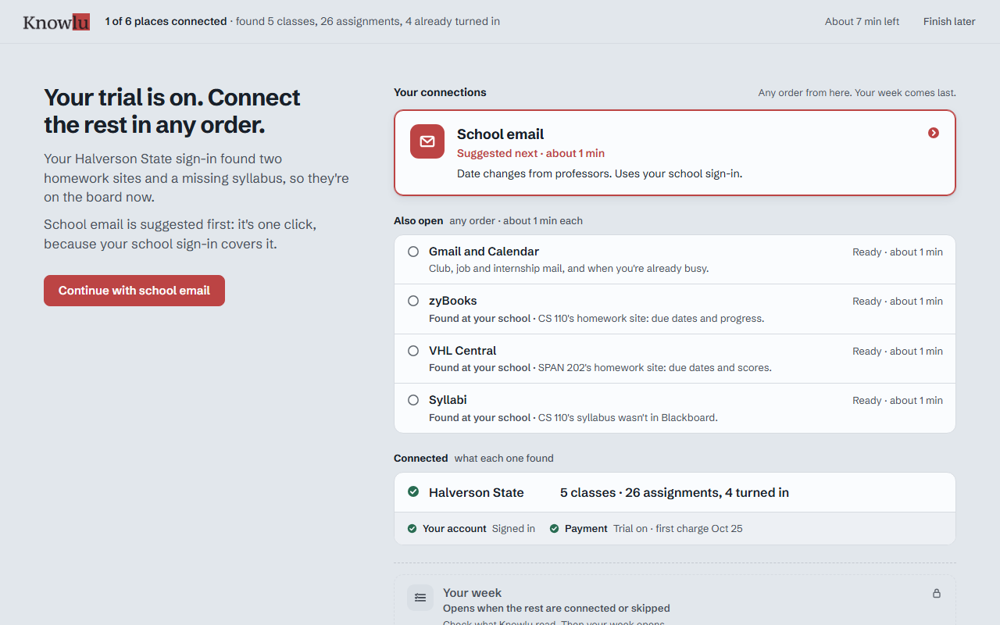
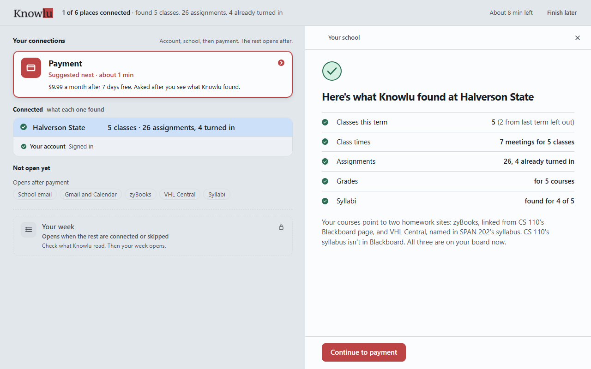
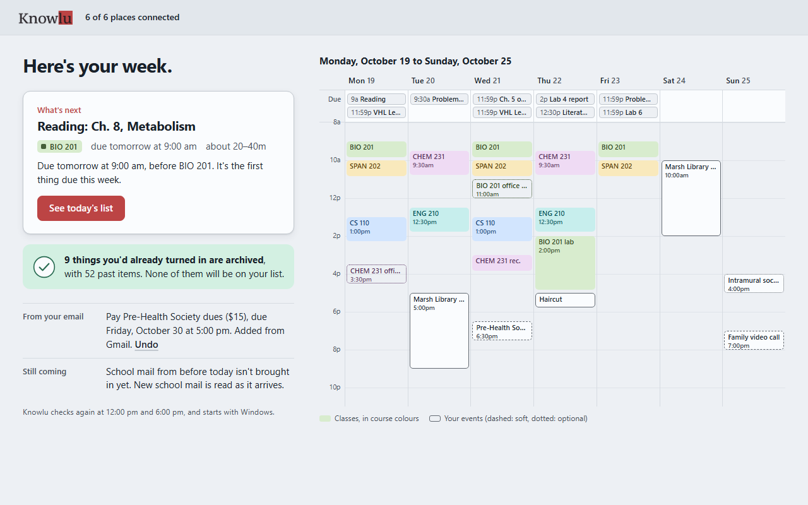
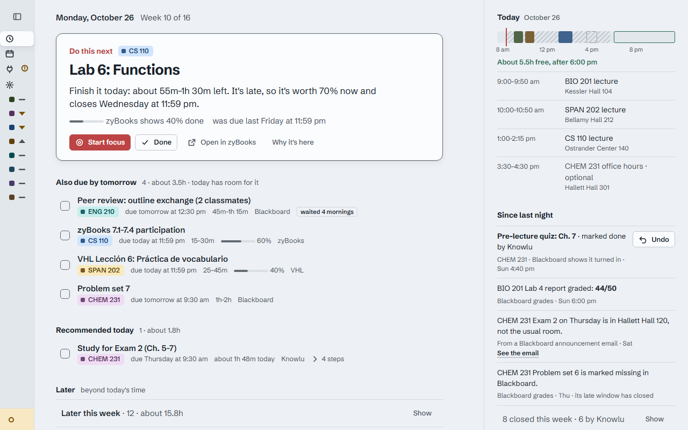
What it borrows
- NotionToggle children for a task's steps; a quiet collapsible rail; tint as course identity; one object, many renders.
- StripeConnect's requirements model (resume lands on the first gap); the Dashboard inspector; distinct "checking" vs "failed" states; errors as cause plus fix.
- Plaid LinkExpectations before the window; data transparency above Continue; the institution's own window; update mode for repair ("sign in again" asks only for what is broken).
Honest weaknesses after round 2
- The same proof appears three times on one screen (top bar, Connected row, sheet), and H has two calls to action for the same step (the hero button and the Suggested tile).
- On S-WEEK the one open item, "Your week", is the last tile in a cramped 320 px column and is cut off at the fold. Proof there breaks over three lines.
- The reveal truncates every chip ("11:59p VHL Le...", "Marsh Library...") and is a generic week calendar with nothing of the hub in it, not even a mark for which place supplied each item.
- The daily page's left rail is unlabelled course dots with trend glyphs and an amber "!" on the plug icon. A broken connection is the hub's subject, and here it has no words.
- "1 of 6 places connected" leaves out Account and Payment, which the board shows as connected.
Worth keeping: "Found at your school" with its reason on each discovered source, and the three-row pre-sheet (You'll need · What Knowlu reads · Where it goes).
Departures recommended
What students fear is being surprised more than the list itself, so status and change become the structure. A rail names each step's benefit before the login and its proof after. A board of the week, one row per day, appears at the school proof and grows at every later one, in counts and course codes only until the reveal. The daily page is the same board in its daily form: the next departure enlarged with its why, the rest in Knowlu's order, one status word each. Changes arrive the way Flighty reports gate changes: the new value, the old one, and the reason.
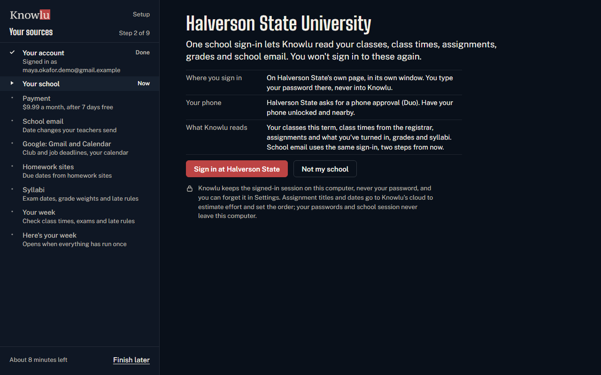
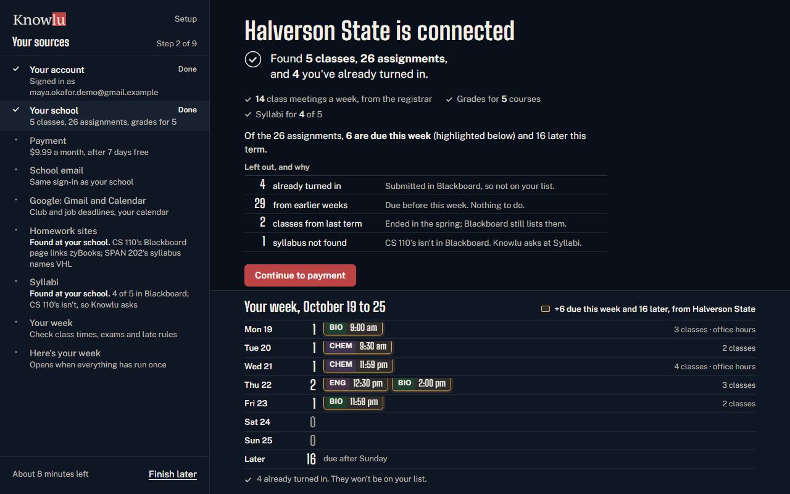
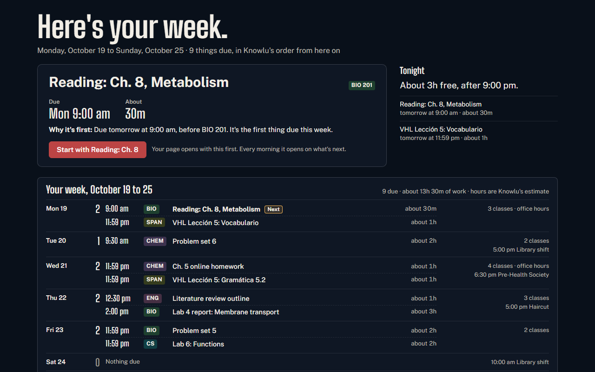
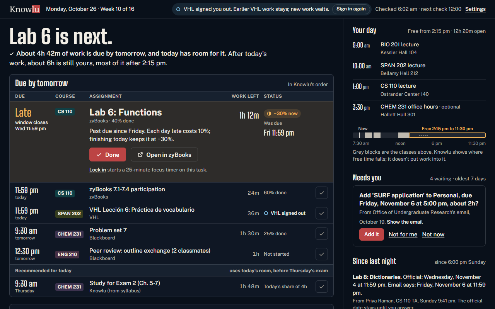
What it borrows
- NotionThe menu-bar "what's next" with no window open (the tray card); Notion Calendar's grid recipe; the preview that builds as you answer, here the board growing one proof at a time.
- StripeMany system states collapse into a few human words; badges typed by what the reader must do; "reading" never looks like "needs you"; the order summary above one $9.99 button.
- FlightyOne line per departure, essential fields only; a change shown as new value, old value and cause; predicted shown beside official, never replacing it. It drops Flighty's countdowns, red/green and delay predictions.
Honest weaknesses after round 2
- The reveal drops the board. Nine steps build one row-per-day board, the daily page uses it, and the payoff screen switches to a 7-column calendar grid. Its button, "Open Knowlu", is shown inside Knowlu.
- A late item's Due cell shows a large "11:59 pm" with a small "Was due Fri". At 11 pm that reads as "due in an hour"; the real close is in the Status column.
- "Left" beside deadline times reads as a countdown ("24m" on an 11:59 pm item), and the page mixes "4.7h" with "1h 12m".
- "Lock in" is the filled red primary on a late row and is never explained; Done is what a tired student wants. Other rows' actions appear only on hover.
- The right rail's Needs-you card (three buttons) and a day bar that needs a four-line legend compete with the board. The wait (
w1-wait) is still the round-1 version.
Why it still leads: it is the only direction where one object runs through setup and the daily page: every login visibly changes the same week board, payment waits for that proof, and the daily page is now that board. The round-1 fixes landed ("Free from" computed, Needs-you date-checked, "Your week" questions-first, the board arriving with the first proof, light mode at parity). The reveal is the last place the thesis breaks.
Side by side
All five keep the ruled ask order and the same logins. They differ in what the student sees while they connect, when the week first appears, and what the daily page is built around. Green marks the strongest answer in each row after round 2.
| 1b Concierge | 2 One thing per screen | 3 Week ledger | 4 Connections hub | 5b Departures | |
|---|---|---|---|---|---|
| Organising idea | An exchange: one line, the action, the proof | One sheet per ask; route bar at the bottom | A ledger of hours that fills as sources land | A ranked board of places; one sheet per place | A step rail plus a week board that grows at every proof and becomes the daily page |
| Flow length | About 22 exchanges on the main path; "about 9 minutes" | About 20 sheets, 7 stops on the route bar; "about 9 minutes" | 12 steps (O1-O12); "about 9 min to your week" | 6 places, 2-4 panes each; "about 8 min"; after payment any order | 9 rail steps; "about 8 minutes" |
| Logins asked | The same in all five, as ruled: account (Google or emailed code) → one school sign-in on the school's own page, with Duo (covers Blackboard, registrar, grades, syllabi and school email) → Stripe checkout in the browser → one Google consent for Gmail and Calendar → zyBooks and VHL (only because the syllabi name them) → CS 110's syllabus as a file. That is 6 sign-ins or consents and 1 file. Google and the homework sites can be skipped, with the cost named. Only 4 relaxes the order after payment. | ||||
| First value | School proof sentence over ruled rows saying what was left out and why | School proof sheet with course codes named, about 2 min in | The ledger's two inputs from the school step on | Proof on the school row, plus discovered places with their reason | School proof plus the week board arriving with 6 items due this week, about 2 min in |
| When the week first shows | At the reveal | At the reveal (held back on purpose) | Inputs from the school proof; weighed only at the reveal | At the reveal | Counts and course codes from the school proof; titles at the reveal |
| The wait (up to 3 min) | Thread follow-ups narrating real work | "Building your week": 12 countable lines (its two counts disagree) | Mostly empty pane beside the ledger | The board plus spinners | Round-1 version, not rebuilt: per-source lines plus the board settling |
| The reveal | Brief and a dense week table; "61 archived" with no way to look | Calendar grid still animating at 4 s; bare due diamonds | "Tightest day: Thursday · 4h of 10h"; legend swatch nearly invisible | Next card beside a calendar; truncated chips; no source marks | Live card, tonight, then a calendar grid that drops the board; tidied, email (with Undo), still coming |
| How "what's next" is answered daily | The list owns the column from row 1; margin is link soup with three hour figures | "Lab 6 is next.", one sentence of why, the task, the list; VHL warning apart from its row | Next item under about nine competing regions; two figures for today's work | Next card and ranked list beside an unlabelled rail and a day column | "Lab 6 is next." and a checked sentence over one board in Knowlu's order, one status word per row |
| The 11 pm case | Not shown in any direction. 2, 4 and 5b all rank the late Lab 6 (window open to Wednesday) above two items closing at 11:59 pm tonight, and every daily page's copy is written for the morning. | ||||
| Biggest risk now | Onboarding as a short form in an empty page; margin noise | A conventional wizard; a reveal that doesn't settle | Numbers that don't add up on the page that promises they will | A hub that pictures the setup, not the week; generic reveal and console | The reveal breaks the thesis; late-item Due cell misleads at night |
| Critique score, round 1 → 2 | 58 → 64 | 63 → 66 | 60 → 61 | 61 → 66 | 65 → 66 |
Flow lengths are main-path counts from each BRIEF's flow map, not timed walk-throughs. None of the five has been timed with a person. The critique scores come from two red-team passes, each using one rubric for every direction. After round 2 the spread is 5 points with a three-way tie at the top, which is within critic noise. Round 2's critique was time-boxed: about five screens were inspected per direction, and most error, empty and skip states were not re-checked.
Recommendation
Keep 5b, Departures, as the spine. Round 2 took four grafts in (2's headline, 1b's list-first page as the board, 3's tightest-day bar, 4's update-mode repair) and closed round 1's fix list. Next, in order:
- Make the reveal the board: the same rows the student watched gain counts, now with titles and hours. Keep the live card, Tonight and the tidied / email / still coming row. Replace "Open Knowlu" with "Start with Reading: Ch. 8".
- Rebuild the wait on 2's R0 model: countable lines, one count, a 3-minute cap.
- Fix the board's daily reading: a late item's Due cell shows "Late" and the window's close; "Left" becomes "Work left" in one time format; Done is the lead row's primary; every row shows an action target; the right rail steps back.
- Graft from 4: "Found at your school" with its reason on the rail rows for zyBooks, VHL and the syllabus. From 1b: S-proof's rows that say what was left out and why.
- Decide the 11 pm order and show it: two items closing in an hour against a late lab with two days of window.
Test with one real student before building more: see README.md. Use the invented Maya data in the prototype, never the student's own accounts.